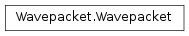

Wavepacket¶
About the Wavepacket class¶
The WaveBlocks Project
@author: R. Bourquin @copyright: Copyright (C) 2010, 2011, 2012, 2013, 2014, 2015 R. Bourquin @license: Modified BSD License
Inheritance diagram¶

Class documentation¶
- class WaveBlocksND.Wavepacket(parameters)¶
This class is an abstract interface to wavepackets in general.
- clone()¶
Clone the wavepacket. Return a new copy of the wavepacket and make sure that all references between the two wavepackets get broken.
Raise: NotImplementedError Abstract interface.
- gen_id()¶
Generate an (unique) ID per wavepacket instance.
- get_dimension()¶
Returns: The space dimension  of the wavepacket
of the wavepacket  .
.
- get_id()¶
Return the packet ID of this wavepacket instance. The ID may be used for storing packets in associative lists.
Returns: The ID of the current instance.
- get_number_components()¶
Returns: The number  of components the wavepacket has.
of components the wavepacket has.
- set_id(anid)¶
Manually set a new ID for the current wavepacket instance.
Parameters: anid (int) – The new ID.